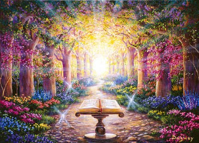
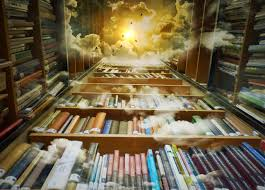

Dentro de esta sección de registros akáshikos encontrarás información sobre
los mismos, en que consisten, y el relato de algunas experiencias de lecturas
que he realizado.
Para profundizar sobre el tema les recomiendo la lectura de mis libros:
- Registros Akáshicos, Encuentro con tus vidas pasadas,
Editorial Kier
- Registros Akáshicos, Sanación del alma,
Editorial Kier
Registros Akashicos archivos del alma,
Editorial Kier
A lo largo de la evolución del ser humano el conocimiento de los Registros
Akáshicos estuvo presente sobre todo en las clases sacerdotales de las
diferentes culturas. En estos tiempos planetarios de tanta transformación,
el conocimiento de los Registros Akáshicos, se abre a todos para favorecer
en el proceso de despertar y ascensión de la Tierra y sus habitantes.
¿Qué es el Registro Akáshico?

El Registro o Archivo Akáshico, es el registro de las experiencias que
tiene un alma desde su comienzo o salida de la Fuente, su tránsito presente
y además contiene todas las posibilidades de su desarrollo futuro,
virtudes, misiones y dones, que podrá utilizar hacia su retorno a la
fuente. En los Registros Akáshicos se almacenan los conocimientos del
pasado, del presente y del futuro de todas las cosas. Este archivo es
atemporal ya que considera al tiempo como circular unificado y simultáneo.
Se hace referencia a este Registro en virtualmente todas las enseñanzas
espirituales se lo conoce como “Libro de los Recuerdos”, “Fuente de los
Decretos”, “Archivos cósmicos de Creación”, “La Memoria de la Mente
Universal”; en el Islam como “La Eterna Tabla”, en la Biblia se lo menciona
como el "Libro de la Vida”.
El conocimiento de los Registros Akáshicos se transmite a través de una
iniciación en la cual además de dar la enseñanza, la maestra o maestro en
Registros Akáshicos coloca teóricamente símbolos en algunos centros de
energía o chacras. Estos símbolos sagrados funcionan como llaves que
permitirán al iniciado abrir su propio libro y luego de un tiempo de
práctica y sanación poder abrir el de ...
otros seres.
Los Archivos Akáshicos se abren para consultas, para iluminación, para
sanación, para una mayor comprensión de alguna situación, para recordar
vidas pasadas, para un mayor y profundo contacto con seres de diversos
planos de la creación y fundamentalmente para el servicio planetario de
limpieza y despertar.
¿En qué consiste la Lectura de registros?

Una lectura del registro akáshico consiste en abrir el registro de tu alma
permitiendo que emerja la información. Todo lo que se reciba como mensaje o
respuesta a una pregunta se canaliza directamente desde nuestros maestros,
guías espirituales, seres queridos, los maestros del Registro Akáshico o
los señores del Tribunal del Karma. La información específica que concierne
a vidas pasadas puede o no ser relevante. El objetivo de la aparición de
una vida o más vidas pasadas, es poder sanar las causas que motivan
situaciones, malestares en el presente y necesitan ser iluminadas para que
no se sigan reiterando. Lo que es generalmente valioso es la guía que se
recibe para ayudar a elaborar y trabajar los patrones que están presentes
en esta vida, las oportunidades para crecer, así como la dirección a tomar.
Se trabaja desde la conciencia de Luz, asistidos por la Gran Hermandad
Blanca para el mayor bien de todos los involucrados. La energía del
Espíritu Santo desciende para darnos guía, dirección e información. Así nos
abrimos a la información contenida en los archivos que nos es comunicada a
través de imágenes, palabras, frases, que nos transmiten directamente los
maestros del Registro Akáshico y también los seres de la Junta Kármica. Es
necesario tomar conciencia de la importancia y profundidad de esta
herramienta que ahora está disponible para los seres humanos, y que no se
mal interprete haciendo un uso oracular y predictivo. Cuando se hace una
lectura, baja un caudal de información para ser trabajado en los días y
meses sucesivos. Personalmente considero que las lecturas pueden hacerse
cada seis meses, tiempo en el cual realmente podemos hacer sanaciones de
raíz y prepararnos para vivenciar las nuevas realidades que se presentan.
La sanación que se da en Registros Akáshicos es a nivel de la memoria del
alma y por lo tanto se irradia a todos los demás planos y cuerpos. Gracias
a este conocimiento podemos recordar una vez más que depende de nosotros si
vivimos en un paraíso o en un infierno, la decisión es el uso del libre
albedrío que como siempre será incondicionalmente apoyada por la Divinidad
Primigenia.
Experiencias en lectura de Registros Akáshicos
Mi experiencia en la Apertura y Lectura de los Registros Akáshicos a nivel
personal fue y sigue siendo amplia y sumamente útil. Como herramienta para
la sanación en todos los cuerpos, tiempos y dimensiones. Es de una eficacia
y profundidad que no puedo compararla al menos hasta ahora con ningún otro
método de curación.
A través de cada lectura, iniciación o simple apertura, se desarrollarán
las capacidades psíquicas y el contacto con seres de planos aún invisibles
para la mayoría de la humanidad. Es cotidiano ahora el encuentro con seres
que ya trascendieron el cuerpo físico, como se dice comúnmente en esta
Tierra “muertos” y lo digo de este modo porque la muerte no existe, ni
siquiera el cuerpo físico muere, simplemente se transforma en otras formas
de vida o en alimento para otros seres.
Les comparto cuatro relatos sobre algunas experiencias de lectura de los
registros Akáshicos, podrán encontrar más viñetas en mis libros:
1) En una sesión de lectura se presentó una señora, abogada penalista a
abrir su registro. Ella hizo varias preguntas sobre su familia, negocios y
por último preguntó por su profesión, la cual ejercía desde que se había
recibido y ya llevaba varios años en la misma. Entonces los maestros
dijeron que ella tenía que cambiar de profesión, que ahora su tránsito
sería por la cinematografía, imaginen el rostro de ella! Una abogada
penalista estudiando cine! Todo un desafío, ella me dijo pero esto como
puede ser, es muy raro y muy loco. Mi tarea es decirte lo que tus maestros
me dicen que te diga, vos meditalo y después ves lo que haces. Pasaron unos
meses y me llamó por teléfono para contarme que estaba estudiando dirección
de cine y que realmente estaba muy feliz, que no se imaginaba tanta
plenitud. En el presente está por terminar su carrera con posibilidades de
un crecimiento importante ya que es una de las mejores alumnas del curso.
Es importante prestar atención porque a veces las respuestas son muy
certeras pero como no están en nuestra esfera de pensamientos posibles las
creemos disparatadas, como podría ser en este caso. Gracias a Dios la
señora escuchó su corazón y se lanzó a la aventura confiando.
2) Cierto día llego a mi consultorio una señora que se había esclerosado
una varice en su tobillo hacía dos años. Consecuencia de una praxis que
ella manifestaba como errónea, la herida no solo no cicatrizaba sino que se
había formado una úlcera que además de incomodidad le causaba dolor y al no
cerrar tenía que estar vendada continuamente. En esos dos años había
recorrido muchos médicos y terapeutas de diversas especialidades buscando
la curación de su dolencia. Abrimos Registros Akáshicos y preguntamos por
la causa de esa manifestación en el cuerpo físico. Los maestros mostraron
una vida pasada de esta señora que había sucedido alrededor del año 1500
aproximadamente. En ese tiempo había sido hombre, y fue apresado en una
celda de piedra y estaba encadenado a la pared, en su tobillo tenía un
grillete muy ajustado. Este grillete se veía justamente en el tobillo que
ella en esta vida presentaba la dolencia. Preguntamos por qué motivo estaba
preso y nos mostraron que este hombre joven había robado comida para su
familia. Lo habían condenado a estar preso hasta su vejez. Pudimos
encontrar además del dolor, bronca y resentimiento guardados, entonces
pedimos dispensación kármica, sanación, perdón y liberación. La señora se
retiró ese día bastante movilizada en su próxima sesión que fue a la semana
siguiente, la úlcera había cerrado por completo y nunca más se volvió a
abrir. Este caso como tantos otros nos muestran cómo cuando hay un registro
de dolor en la memoria celular del alma en una zona específica del cuerpo y
no es sanada en otras vidas vuelve a producirse una afección en el mismo
sitio.
3) En una iniciación se habían reunido un grupo de personas casi todas
mujeres, una de las participantes, llamada Esmeralda, manifestó tener un
dolor muy fuerte en la espalda a la altura de la cintura, dolor que no se
iba con masajes ni con calor ni con calmantes. En el momento de hacer la
apertura y lectura de los Registros Akáshicos el dolor se potenció. Una de
las integrantes del grupo sintió que este grupo se conocía de otra vida, y
en la lectura los maestros nos mostraron con mucha claridad que juntas
habían formado un círculo de mujeres que en la época medieval trabajaban
con hierbas haciendo remedios para la gente del pueblo. Estas mujeres se
reunían en el bosque y estaban guiadas por una anciana llamada Cristal.
Esmeralda sentía mucha envidia de los conocimientos de Cristal, entonces
trató de absorber toda la información
posible y luego como la anciana se había dado cuenta de sus intenciones
egoicas de poder, no le transmitió más enseñanzas. Esmeralda despechada
decide hablar con los sacerdotes de la Inquisición y entregar no al círculo
sino solo a Cristal. Su objetivo es que retiraran a Cristal y luego de un
tiempo ella seguir con el círculo de mujeres comandándolo. Cuando llegó el
día en el que ella les entregaría a Cristal en el bosque, el círculo de
mujeres percibió la intención de Esmeralda, se reunió en meditación y
vieron los acontecimientos sucedidos y lo que podría suceder, entonces le
avisaron a Cristal. Cuando los sacerdotes llegaron al bosque no pudieron
encontrar a Esmeralda porque las mujeres del círculo la lastimaron con un
cuchillo en la espalda a la altura de la cintura para que no hablara.
Cristal apenada de ver este acontecimiento de deslealtad decidió quedarse
en soledad en el bosque, el círculo de mujeres se disolvió pero antes se
comprometieron a encontrarse en otra vida para terminar de realizar lo que
habían comenzado a hacer que eran pociones de curación natural. Pedimos
dispensación kármica, sanación, perdón y liberación de todo lo generado en
ese tiempo. Fue muy fuerte para todos los participantes, al final del curso
de iniciación quién había sido Esmeralda ya no tenía más el dolor en su
espalda y nunca más reapareció la dolencia.
4) Otro caso que se repite es el de las mujeres que no pueden quedar
embarazadas, más allá de los métodos de inseminación artificial y otros.
Tengo presente el ejemplo de una mujer que vino a una iniciación y en el
momento del intercambio a través de la lectura del Registro Akashico,
preguntó cual era la causa de su infertilidad. En realidad ella era fértil
y su marido también, lo que sucedía era existía una deuda kármica ya que
ella en otros tiempos había practicado abortos en muchas mujeres. Esto era
preciso saberlo y sanarlo más allá de la emoción. Se sanó la situación
pasada y pudo liberarse de la carga, la preocupación y la ansiedad que la
estaban enfermando. Ese matrimonio decidió no tener hijos propios, para
entregarse fuertemente a ayudar a niños huérfanos, así podrían ser padres
de muchos y ayudarlos con todo el amor que tenían para brindar. Otros casos
similares se presentaron pero con seres que si quisieron formar una familia
con hijos. Hicimos la apertura y lectura de los registros, en donde se
observaba que la causa casi siempre era la misma, en todos ellos se pidió
dispensación kármica y así los seres libre de karma, pudieron conformar su
familia en armonía y alegría junto a sus hijos.
Experiencias de conexión con
los reinos mineral, vegetal y animal a través del uso de los Registros
Akáshicos.
El conocimiento de los registros Akáshicos nos permite reestablecer nuestra
comunicación fluida con los reinos de la naturaleza. Es muy bella la
experiencia de abrir registros de los minerales sobre todo de los
cristales, ellos llevan millones de años sobre esta Tierra y muy lejos de
esperar que nosotros los programemos para un uso determinado, ellos tienen
la memoria de muchas épocas y un caudal muy importante de energía para
compartirnos. Ellos no necesitan ser retirados de los lugares en donde
están porque es desde allí donde hacen su mayor servicio de limpieza,
energetización y amor al planeta. Muchos de los cristales manifiestan dolor
por haber sido quitados a golpes de los lugares en donde naturalmente
estaban y me pregunto ¿qué energía nos podrá irradiar un cristal con esa
memoria de dolor? A muchos humanos nos agrada usar cristales dentro de
nuestro arreglo personal, pero en este transito a una mayor luz pronto ya
no lo necesitaremos.
Al abrir los registros del reino vegetal es maravilloso saber como podemos
solicitar asistencia a los elementales, por ejemplo del tilo, y pedirle que
actúe en nuestro sistema nervioso, entonces se estará produciendo un efecto
inmediato trabajando desde la esencia etérica del tilo y esto hará que no
sea necesario que cortemos las flores del árbol de tilo y tomemos un te en
el plano físico. Imaginen cuantas cosas podremos hacer en este contacto
maravilloso de alma a alma.
Con respecto al reino animal les contaré una experiencia con los delfines
de Mundo Marino en San Clemente del Tuyu Buenos Aires Argentina, en ese
lugar los delfines están en cautiverio porque se los está curando ya que
fueron encontrados heridos. Pero se los entrena para hacer espectáculos
para que mucha gente los conozca y pueda percibir su energía. Resulta que
en un viaje que hice fui a este lugar, y cuando entre en el anfiteatro en
donde actuarían los delfines pase por al lado de una de las piletas donde
uno de ellos daba vueltas aceleradamente. Ya estaba yo con mis registros
abiertos y abrí los del delfín, comencé a sentir un dolor en el pecho muy
intenso y ganas de llorar, el delfín se estaba comunicando y me manifestaba
su cansancio por tener que hacer una y otra vez lo mismo para recibir su
alimento, él quería ser libre!, entonces le envíe mucha luz desde mi
corazón y telepáticamente le dije, no estás obligado a hacer lo que no
quieras, si estas cansado no hagas el espectáculo. Y seguí mandándole mucha
luz, amor y paz. Pedí a los guías y maestros que ayudarán en esta
situación. Pues dio comienzo el espectáculo y que pasó? Cuando el
entrenador tocaba el silbato el delfín giraba la cabeza hacia donde estaba
yo, y no hacia nada, no se imaginan la cantidad de pescado que le dieron y
él seguía tranquilo comiendo y sin hacer ninguna pirueta. Mi pareja me
preguntó ¿qué hiciste? Porque el sabia que yo abría registros por todos
lados y yo le dije el delfín no quería actuar, que estaba cansado. El
intento para que haga algo duro unos 20 minutos y luego el entrenador dijo
- bueno tenemos que tener en cuenta que ellos son seres vivos y que a veces
no tienen ganas de actuar, todos lo aplaudieron mucho, mucho y el delfín se
fue a descansar. Es maravilloso reestablecer el contacto con los reinos de
la naturaleza, es un acto de amor y en verdad permite que el corazón se
llene de alegría y luz.
Otra comunicación que hago con frecuencia es con el alma de los vientos y
de las tormentas ya que con el efecto invernadero ocurren en el planeta
desbalances muy fuertes que generan incendios o inundaciones, entonces
pidiendo el permiso correspondiente y pidiendo que sea en armonía total con
la naturaleza, intento solicitar lluvias para las zonas que lo necesitan o
sol para aquellas que tienen agua en demasía.
Es hermoso recordar la comunicación con la naturaleza y tan inmensa y tan
amorosa, realmente da placer hacer nuevamente contacto con nuestros
hermanos de todos los reinos.
Estos son algunos de los casos que compartí desde mi corazón con varias
personas. Espero que sirva como base para el entendimiento de situaciones
de vida, para la toma de conciencia, y para sobre todo entregarse a la
apertura necesaria para la gran transformación planetaria hacia la edad
dorada.
Hay una profunda relación entre los Registros Akáshicos y el ADN de los
seres humanos. Ya que ambos tienen la información necesaria para el
despertar hacia la ascensión del ser.
En este bendito tiempo de recuerdo los seres humanos descubriremos la
esencia de Dios en el centro de cada átomo de cada molécula existente.
Descubriremos el amor de Dios en cada célula biológica del cuerpo Humano.
Dios no está confinado a lo que los humanos “creen” que es Dios. Dios no es
definible. Dios no es doctrina. No puede ser dividido en compartimentos.
Cuando las sanaciones del alma ocurren en el registro akáshico, el amor de
Dios está ahí, dado que Dios está en todo. Cuando los humanos llaman a
Dios, están llamando a la divinidad que está dentro de todas y cada una de
sus células. Allí es donde está Dios.
El recordar la presencia divina en cada ser, también nos hace sentir
fuertemente que nadie está solo nunca. Si la divinidad está en todo
deberíamos reflexionar acerca de ¿que es bueno y que es malo? Siempre vemos
esto como si estuviera fuera de nosotros y realmente como dijo el maestro
Osho “todo lo que está en tu afuera, viene de tu adentro”.
Lo que nos parezca más tenebroso así como lo más luminoso fue co-creado por
un ser humano. Lo más sombrío nace del lugar más sombrío de la mente humana
y lo más luminoso del lugar más luminoso de la mente humana. Es por eso que
se dan herramientas en estos tiempos como los registros akáshicos para la
limpieza consciente de aquello que no se desea vivenciar más. Recordar el
poder de la mente, que puede manifestar oscuridad o luz, y poner en acción
los procesos de reconstrucción planetaria.
Una canalización de kryon dice:
“Queridos Seres Humanos, todos ustedes están diseñados para la paz en la
Tierra. Todos ustedes están diseñados para encontrar la chispa de amor en
el otro. Su vida es lineal, pero el planeamiento no lo es. También tiene
que ver con la vida y la muerte de otros que los rodean, y con la dinámica
del libre albedrío. ¿Consideraron alguna vez que quizá no haya un “contrato
establecido” que sea sólo para ustedes? ¡Y si es un multicontrato! De
hecho, ustedes tienen que preguntar: “¿Quiénes son ustedes?” ¡“Ustedes” no
están del todo aquí! ¿Cómo podrían estarlo, si tienen un Ser Superior?
¿Quién es el Ser Superior? ¿Son ustedes o no? ¿Es “propio” o no? Si
realmente es una parte de ustedes, y no está aquí, entonces ustedes no
están completos, ¿no es cierto? Está del otro lado del velo. ¿Pensaron en
eso? De modo que, en realidad, ustedes no están del todo aquí. ¡Eso abre
una puerta de comprensión para que también se den cuenta que quizá son un
grupo espiritual (más de dos), que de hecho puede estar en muchos lugares!
El Ser Superior de cada Humano está involucrado con los otros Seres
Superiores de otros humanos. ¿De qué otro modo piensan que podría
funcionar la co-creación? Ustedes no co-crean en el vacío, ¿saben?
Cada vez que cambian su realidad y crean una situación, están
interconectándose con la realidad de alguien más. Cada vez que cambian su
propia situación, afectan a los que los rodean.
En este mensaje con múltiples llegadas por todas las regiones de la Tierra,
nos hace tomar conciencia de la unicidad. Sabiendo que también el libre
albedrío es compartido, porque nos interrelacionamos con otros seres. Por
eso en registros akashicos siempre se pide que se sanen todas las personas
involucradas ya que siempre es un conjunto de almas que se presenta y no
solo un ser.
Somos una parte de Dios por lo tanto tenemos los atributos de Dios, creemos
que Dios está en todas partes pero nos cuesta aceptar la divinidad en
nosotros mismos, recordemos que Sai Baba menciona que el es Dios como
nosotros nada más que el se acuerda y nosotros no.
Si todos somos divinidad entonces estamos unidos en un solo ser atemporal.
Quiere decir que nuestros antepasados, nuestros ancestros están ahora con
nosotros. Ellos fluyen a través de las partes interdimensionales del ADN,
con el tiempo y con la profundización de las lecturas del alma vamos a
capas más profundas. Cuando tenemos contacto con nuestros ancestros estamos
haciendo un viaje en nuestra propia estructura celular. Quiere decir que
más allá de nuestra encarnación persistimos en el ADN humano y esto es
grandioso si lo podemos ver. ¿Por qué grandioso? Si nuestra grabación queda
en el ADN y en la memoria del alma todo lo constructivo que cada ser haga
en su vida se proyecta hacia toda la humanidad más allá de este tiempo
presente.
Estar atentos a nuestro accionar más que nunca, para ser co creadores de la
edad dorada.
Para lo cual no se puede tener lo viejo mezclado con lo nuevo, la
reconstrucción de lo que debe ser tiene que ser por completo. La verdad
está buscando su más alto nivel y los humanos estamos comenzando a
experimentar la transparencia condición necesaria para la reconstrucción
planetaria. El ser humano retoma su poder co creativo entonces se mueve más
allá de las restricciones del tiempo anterior, siendo capaz de pensar más
allá de su realidad anterior y pudiendo realizar tareas que antes creía
imposibles de hacer.
Recordar que nadie nos da nada, que somos la fuente, que recibiremos en la
medida de lo que demos. La ilusión hace creer que nos relacionamos con
otros, pero eso no es posible ya que en todo momento nos relacionamos con
nosotros mismos. Siempre hemos sido y seremos la causa de todas nuestras
experiencias.
En todo momento estamos eligiendo y decidiendo, manifestar, crear y
experimentar algún aspecto del ser. Solo existe una relación y es con uno
mismo, los demás son ángeles y seres convocados por uno para lograr el
camino de realización en el sendero de evolución hacia el real ser. Siempre
se nos dió lo que pedimos. Al final del camino cuando finalice este
capitulo del libro de la vida, nuevamente seremos concientes de la
inocencia absoluta de quienes nos acompañaron. Y veremos que ellos nos
permitieron cumplir con nuestros anhelos jamás imaginados: la posibilidad
de experimentar, nuestros aspectos más elevados. Veremos que ellos
cumplieron con todos los pactos acordados, que nos llevaron muchas veces a
experimentar nuestros aspectos más bajos y así hacer físicamente posible
que nos manifestemos concientemente. La gran justicia divina nos será
revelada, cuando seamos capaces de ver que nadie jamás nos dañó y que todos
los daños recibidos fueron por nosotros imaginados, creados y
experimentados. Similarmente y ante nuestra sorpresa, también sabremos que
aquellos dolores y sufrimientos con los que creíamos dañar a otros, fueron
también fruto de nuestra propia imaginación. Porque lo que es para uno es
exactamente igual para nuestros hermanos. Todo dolor y sufrimientos
padecidos fueron por ellos imaginados, creados y experimentados. También
sabremos que todo el amor que escatimamos a nosotros mismos nos lo
quitamos. Aún el miedo más intenso, el dolor más profundo, la traición más
artera, la ofensa menos esperada, la agresión más hiriente, en fin el
infierno más temido, fueron todas magníficas expresiones por nosotros
elegidas.
La creencia de que fueron “otros” los “verdaderos” causantes de tanta
injusticia y sufrimiento en nuestro interior. No, amigos no, nunca han
existido, ni existirán injusticias en el plan perfecto de la vida. Al final
del camino nos veremos como siempre fuimos y seremos, los creadores
absolutos y libres de todas nuestras experiencias.